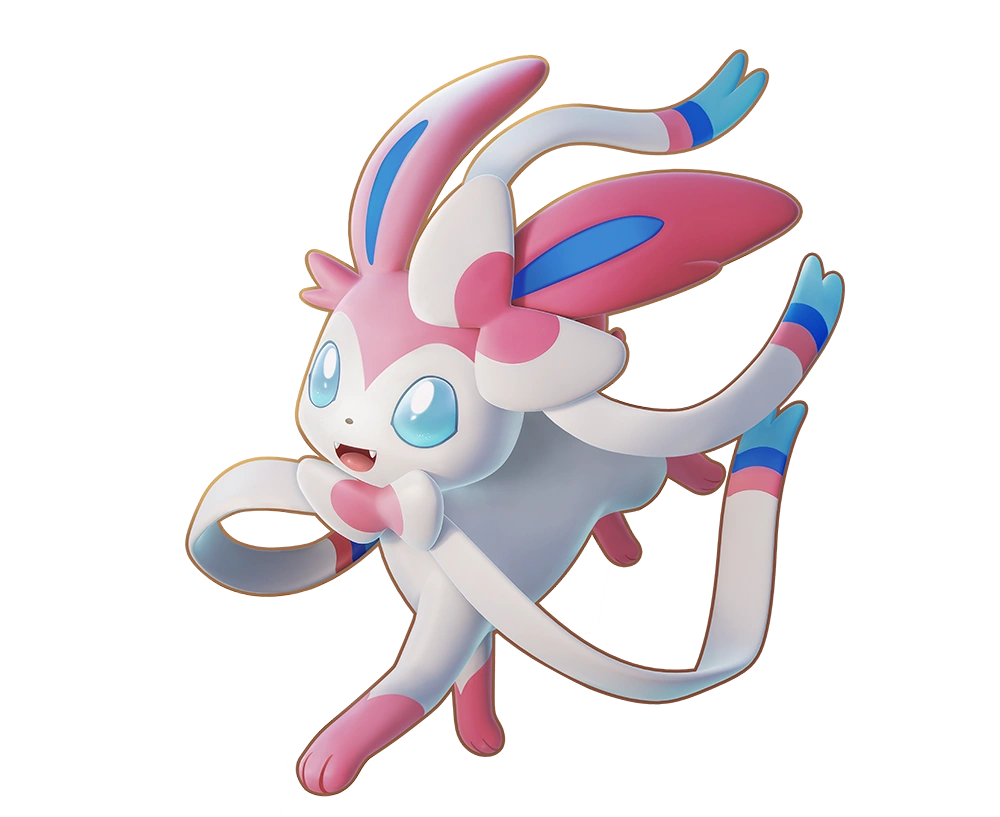
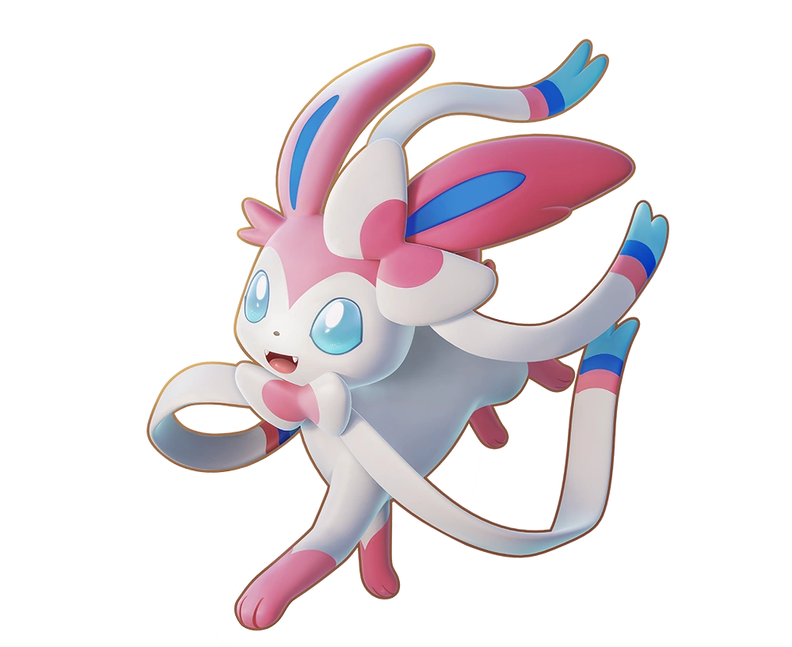

This is my favorite pokemon Victini
Yeah this is going to be me obsessing over pokemon now. Have a video explaining my favorite Pokemon
 

So Pokemon has a cool competitive scene using certain Pokemon to fill niches or to fill a certain team archetype. Granted all of this information is coming from someone with little competitive experience so take my words with a pinch of salt. A Pokemon has its base stat totals which is fixed, but also has hidden stats which are IVs and EVs. Individual Values (IV) are determined by chance and can not be changed, these IV's determine how good a Pokemon can be. Effort Values (EV) are obtained through several methods like items, defeating other Pokemon, and EV training. Pokemon can change their playstyles drastically depending on what IVs it has, and what EVs were trained. So now we enter team archetypes, I'm only going to list 3 for simplicity. Weather teams are based around a certain weather condition in the game, certain Pokemon can set up these weather conditions upon entering the battle so the team tries to send them out first and captilize on that weather. Hyper Offense goes for swift K.Os and try to end the battle as quickly as possible, they don't need much set up but they can be toppled easily if not careful or if their opponent has set up their side. Trick Room teams revolve around the move Trick Room which allows the slowest Pokemon on the field to move first, and the fastest Pokemon goes last. These 3 styles vary heavily based on the current meta game, which Pokemon are legal in the format, and who is running the team.
So I'm done ranting about Pokemon now hope you have a good day!